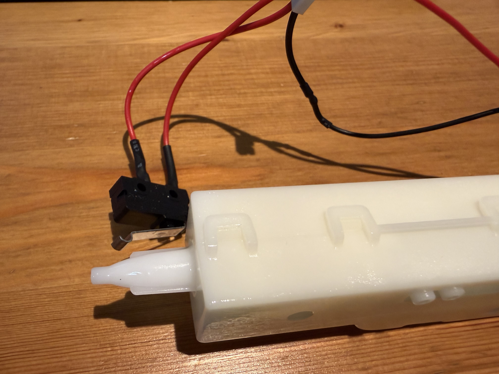

Adaptive Hardware
Assistive Joystick & Adapters
Assembled five Spruce Mini Joysticks utilizing joystick modules and 3D-printed hardware as well as 5 Forest Hubs.

Hand-assembled assistive tools, switches, and custom devices delivered locally.
Building and testing open-source devices to ensure they meet the needs of the community.
Every device is printed, wired, tested, and distributed directly to users without charge.
Assembled five Spruce Mini Joysticks utilizing joystick modules and 3D-printed hardware as well as 5 Forest Hubs.

A mouth-operated joystick that enables individuals with limited hand mobility to control touchscreens and computer cursors via sip-and-puff controls.

A custom modification of a recreational electric water blaster, switch-adapted with an external MMC60 switch for accessible summer play.
Browse the official Makers Making Change device library of over 200 open-source assistive tools, or submit a request for a custom adaptation.
Our team 3D-prints the enclosures, solders electronics, and hand-assembles each device to strict quality standards.
Finished devices are tested and delivered directly to individuals, families, and communities locally at zero cost.
We build and distribute assistive technologies free of charge. Tell us which device you need, how many, and any specific adaptations required or simply ask us a question.